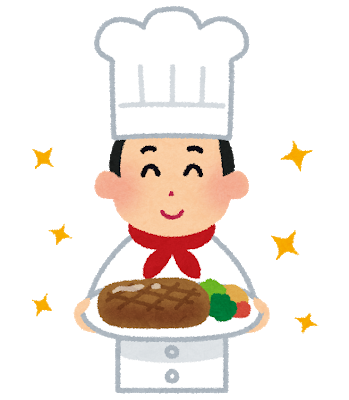

家族のためにご飯を作る
家族のためにご飯を作る
三男が入院してしまった。妻はそっちにかかりっきりなので、残りの子供達の面倒は基本自分が見ることになった。

男やもめ状態になっただけなら、飯なんてどうにでもなるんだが、幼児が二人いると常に飯の事を考えていることになる。ちょっと飯の準備が遅れただけで「ねー、おなかすいたー」が飛んでくる。ええい、こっちはおまえらが毎日保育園から大量に持って帰ってくる服を洗ってるんじゃ。ちょっとくらい待て！…と言ってもわからないのが幼児。しょうがない。
普段は自分が送り迎えや風呂をやっている間に夕飯の支度は基本的に妻に任せているのだけど、自分はずっと自炊生活してたので、別に突然飯を作れと言われても困らない。
で、久しぶりに飯炊き係になったらそれはそれで楽しい。
料理を作るのが楽しいのはさることながら、一番楽しいのは効率化だ。調理時間の短縮等はもちろんだけど、他にも色々ある。
まずは献立そのもの。我が家ではもう確定で3品かそれ以下のおかずを子供達に出すことにしている。4品になることはあってもそれは偶然。とにかく「ちゃんとしたご飯」はだいたい3品で充分と決めてる。
そのうちひとつがタンパク質系のメイン。もう一つ野菜メインのおかず。そしてこれはもうほぼ固定で必ずトマト（うちの子供達が万が一野菜が嫌いになった場合でも、何かひとつ野菜を好きになってもらおうとせっせとトマトを食べさせた結果、好きになった）。なので実質考えるおかずは二つ。
でもおかずを考えるのが楽しいのは料理好きならみんなそうだと思う。自分はそれに付け加え、色々とロジスティックス的な事を考えるのが好きなので、他にも色んなことをプランニングして楽しんでる。
- 洗わなければいけない食器を最低限にとどめる
- 前の日の食材を使い回す
- 明日は夕飯を作る時間がないから先におかずをつくっておく
- 冷蔵庫に眠っている野菜とかを腐る前にちゃんと料理する
- はたまたそういう状況に陥らないために買い物の内容を気をつける
とかとか、そういう全てにおいての効率化が楽しい。脳が活性化する。
料理をする時は「食べられるモノができる」という快感を充分に得たあとはこういう効率化が良いモチベーションになる気がする。
というわけで、本日の夕飯準備に使う予定だった1時間半（買い物込み）のうち1時間くらいでほぼ全部できたので、あまった時間でこのエントリを書いた。
落ちはない。